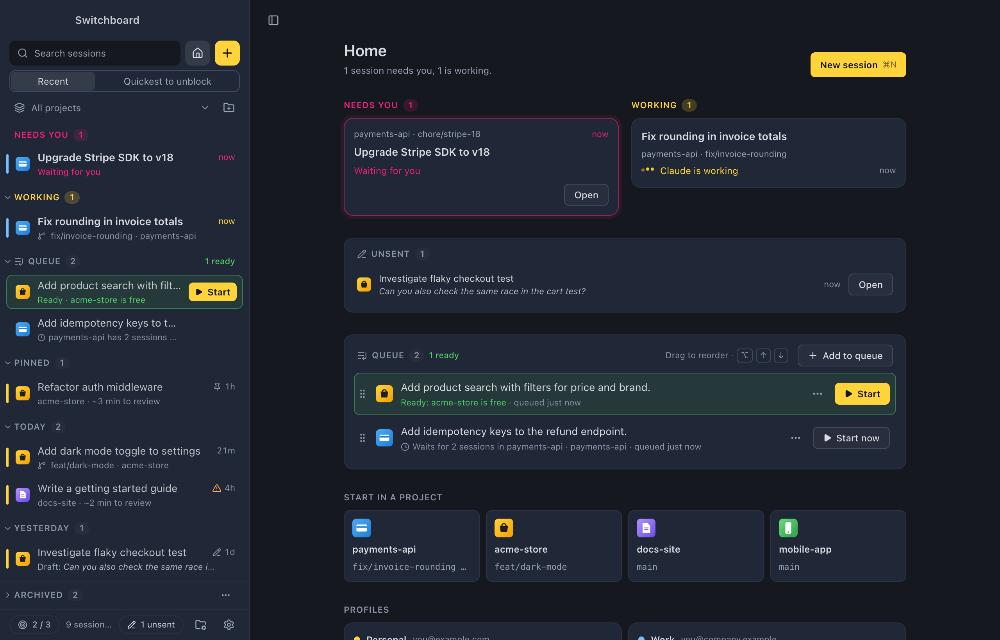

For Mac and Windows
All your Claude Code sessions in one window
Start sessions, see which ones need you or are working, and pick up any conversation where you left off.
Start sessions, see which ones need you or are working, and pick up any conversation where you left off.
